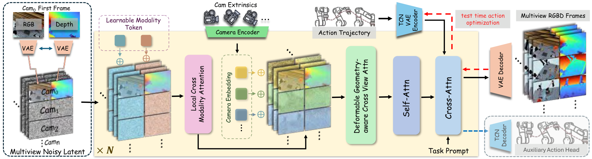
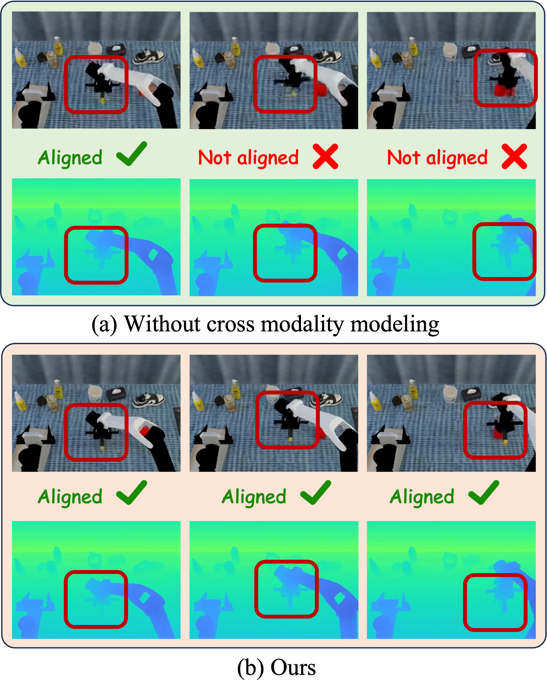
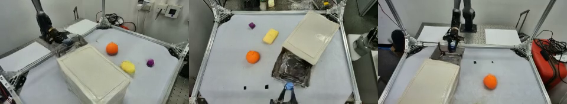
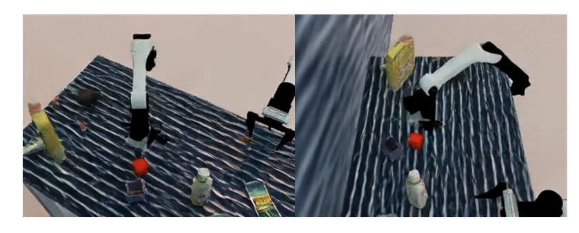
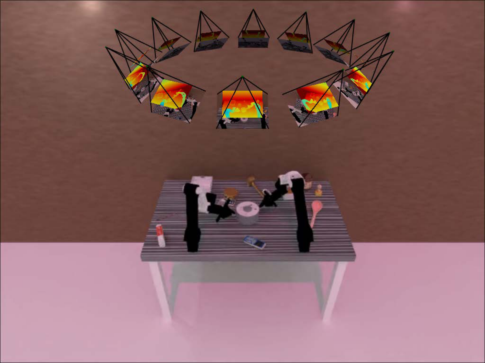

MVISTA-4D: View-Consistent 4D World Model with Test-Time Action Inference for Robotic Manipulation
1. Quick overview of the paper
| What should the paper solve? | Solve two bottlenecks in the imagine-then-act robot framework: First, existing world models are mostly 2D or single-view RGB-D, which cannot obtain a complete, cross-view consistent 4D scene, and are geometrically unstable when encountering occlusion and contact operations; second, converting the generated future into actions usually relies on inverse dynamics, but the same visual transfer can be explained by multiple actions, gradually IDM is naturally ill-posed. |
|---|---|
| The author's approach | The starting point is to change the world model and act stage at the same time. On the world model side, based on WAN2.2 TI2V 5B DiT, RGB/depth cross-modality fusion, spherical coordinate camera embedding, and epipolar-line constrained deformable cross-view attention are designed to generate multi-view RGB-D. On the action side, the entire action sequence is compressed into TCN-VAE trajectory latent/style code. During testing, backpropagation is used to optimize the latent to make the generated results match the imagined future, and then residual IDM is used for local action correction. |
| most important results | In terms of 4D generation, the method is most optimal in geometric indicators such as FVD, depth, point cloud CD/EMD of RLBench, RoboTwin and real data; for example, the real data CD dropped from 17.32 in 4DGen to 13.06, and the EMD dropped from 15.61 to 14.37. In terms of operation success rate, RLBench 72.6 and RoboTwin 43.0 are both higher than P-ACT, UniPi*, 4DGen, and TesserAct; 5 of the 6 real robot tasks exceed TesserAct. |
| Things to note when reading | The focus is not on "another 4D generative model", but on whether the three interfaces are really closed: whether multi-view RGB-D generation improves fusion geometry; whether trajectory latent is more stable than stepwise action conditioning; whether test-time latent optimization + residual IDM alleviates the multi-solution nature of inverse dynamics. When reading tables, you should also note that the author often chooses between RGB indicators and geometric indicators, and advocates mainly based on geometric consistency and downstream manipulation success rate. |

Contribution in one sentence
The paper combines RGB-D 4D generation with consistent multi-view geometry and latent trajectory reversal during testing to support robot manipulation with more complete dynamic geometry.
keywords
4D World Model Multi-view RGB-D Generation Cross-view Attention Trajectory Latent Residual IDM
2. Research questions and motivations
2.1 Why multi-view 4D world model is needed
World-model-based manipulation typically predicts future observations and then drives actions from future observations. The key to this imagine-then-act paradigm is that the imagined future must be close enough to the physically executable scenario. When only RGB video is generated, the image may look reasonable, but depth, occlusion, relative object position, and contact geometry may be inconsistent; this can cause subsequent action inference to be based on the wrong geometry.
Methods such as TesserAct have introduced RGB-DN/RGB-D into the world model, but many of them are still single-view output. A single perspective will lead to missing hidden surfaces and occlusion areas, and the fused 3D structure will be incomplete. The goal of MVISTA-4D is to allow the model to start from a single RGB-D observation, "complementarily imagine" other perspectives, and maintain the same dynamic scene in time.
2.2 Why inverse dynamics is not enough
A common way to go from generating futures to actions is inverse dynamics: given \(\hat{o}_t, \hat{o}_{t+1}\) predict \(a_t\). However, in robot operation, the same visual change may be caused by multiple actions, and local observation may also lack contact information; therefore, stepwise IDM is easily ill-posed. The author believes that the action trajectory itself has a low-dimensional structure and strong temporal correlation, and should be expressed in trajectory-level latent, rather than hard aligning each action step to each video frame.
4. Detailed explanation of method
4.1 Problem definition and diffusion basis
The input is the reference viewing angle RGB-D observation \(\mathbf{o}_0=(\mathbf{I}_0, \mathbf{D}_0)\), the reference camera external parameter \(\mathbf{T}_0\), the target viewing angle external parameter \(\{\mathbf{T}_i\}_{i=1}^{N}\) and the language command \(l\). The model outputs a future RGB-D sequence in which the reference view is synchronized with all target views. After generation, camera intrinsics/extrinsics can be back-projected and fused into a dynamic point cloud sequence.
The diffusion model uses latent video diffusion / flow matching. Forward path is:
During inference, we start from Gaussian noise, use Euler steps to solve probability flow ODE, and obtain RGB-D video through VAE decoder.
4.2 Input format strategy
The author adopts structured tokenization: RGB and depth within the same viewing angle are placed at adjacent token positions according to width-wise concatenation to encourage appearance/geometry interaction at the same spatial position; different viewing angles are organized according to height-wise concatenation to promote structural-level cross-perspective information exchange. Because pixel-level alignment between views is affected by parallax/occlusion, the true geometric correspondence is handled by the cross-view module.
4.3 Feature Integration Across Modalities
In order to allow the shared backbone to distinguish RGB appearance tokens and depth geometry tokens, the author added learnable modality tokens to the two modalities:
Insert local cross-modality attention before the standard self-attention in each DiT block. For position \(i\), appearance-to-geometry attention is only performed in the local neighborhood \(\mathcal{N}_r(i)\) of the geometric token grid, and the reverse is also performed symmetrically:
The local window reduces the matching cost of global cross-attention and also provides local geometric priors for RGB-depth alignment; gated residual avoids forced fusion of bad information when there is noise or misalignment.

4.4 Learning Geometric Consistency Across Views
The perspective token does not use ordinary learnable embedding, but is directly provided by camera embedding. Instead of flattening the \(3\times4\) extrinsic matrix, the authors represent the camera in spherical coordinates around the common look-at point \(\mathbf{p}\). First estimate the closest point to all camera optical axes:
Then use \(\mathbf{r}_v=\mathbf{c}_v-\mathbf{p}\) and \(\rho_v=\|\mathbf{r}_v\|_2\) to calculate yaw, pitch, and roll, use the Fourier features of \(K=2\) for the angle, and splice \(\log(\rho_v)\) to obtain 13-D camera embedding:
Cross-view fusion uses geometry-aware deformable cross-view attention. Given the query token of view \(v\), \(K\) candidate key/values are uniformly sampled from the corresponding epipolar line on the upper edge of another view \(u\); then MLP is used to predict a small offset based on the query, initial key feature and similarity, and correct the misalignment under coarse latent resolution:

4.5 Trajectory Conditioning as a Style Code
Action trajectory is a key condition for generating robot motion. Increasingly aligning action sequences to video frames introduces fragile correspondences between control frequencies and video frame rates, and also easily exposes weakly visible high-frequency control details in pixels. The author instead uses TCN-VAE to compress the entire action into low-dimensional trajectory latent/style tokens:
In the paper, \(\mathbf{z}\in\mathbb{R}^{S\times C=32}\) is injected into the generator through cross-attention as \(S\) style tokens. In order to prevent the generator from ignoring the trajectory conditions, a latent-consistency head is added during training, \(\hat{\mathbf{z}}\) is reconstructed from the last layer of hidden tokens, and constrained with \(\mathcal{L}_{traj}=\|\hat{\mathbf{z}}-\mathbf{z}\|_2^2\); this head is only used during training and discarded for inference.
4.6 Test-time Action Optimization and Residual IDM
During inference, first use text-only conditioning to generate a dynamic rollout \(\bar{\mathbf{V}}\). Then freeze the rollout, starting from the randomly initialized trajectory latent \(\mathbf{z}\), and use backpropagation to find the condition latent that best reproduces the rollout:
This is more stable than directly optimizing the full-length stepwise action because the search space is a learned low-dimensional trajectory manifold. Then the residual IDM is further modified: given the continuous point cloud \(\mathcal{P}_t, \mathcal{P}_{t+1}\) and the prior action \(\mathbf{a}_t^{prior}\), predict the residual \(\Delta\mathbf{a}_t\):
In this way, IDM no longer interprets the visual transfer from scratch, but makes local adjustments near the existing trajectory intention to alleviate the multi-solution nature of inverse dynamics.
5. Experiments and results
5.1 Datasets and Evaluation
4D generation is evaluated on two synthetic datasets and one real dataset. RLBench collects more than 8, 000 trajectories and RoboTwin2 more than 10, 000 trajectories, each containing 10 tasks; each episode has 16 RGB-D camera views, known camera parameters, text instructions, and action sequences. Real data is collected by 4 RGB-D cameras and a real robotic arm platform, including 14 manipulation tasks, and the corresponding actions are recorded.
Metrics are divided into appearance, depth and point cloud: PSNR, SSIM, FVD; AbsRel, RMSE, \(\delta_1\); Chamfer Distance (CD) and EMD. SSIM, AbsRel, RMSE, CD, EMD in the main table are all scaled by \(10^2\).
5.2 4D scene generation main results
| Dataset | Method | PSNR ↑ | SSIM ↑ | FVD ↓ | AbsRel ↓ | RMSE ↓ | CD ↓ | EMD ↓ |
|---|---|---|---|---|---|---|---|---|
| RLBench | UniPi* | 23.88 | 91.7 | 19.94 | 117.9 | 43.2 | 15.0 | 20.6 |
| RLBench | 4DGen | 22.25 | 87.1 | 20.51 | 91.8 | 29.3 | 10.9 | 16.0 |
| RLBench | TesserAct | 23.86 | 92.8 | 27.77 | 91.8 | 29.4 | 11.0 | 16.3 |
| RLBench | Ours | 23.31 | 90.8 | 18.57 | 90.5 | 29.1 | 9.6 | 15.3 |
| RoboTwin | UniPi* | 22.98 | 89.2 | 22.18 | 5.52 | 18.13 | 9.88 | 20.53 |
| RoboTwin | 4DGen | 22.18 | 85.2 | 24.61 | 3.00 | 13.90 | 7.18 | 10.62 |
| RoboTwin | TesserAct | 22.65 | 89.8 | 27.29 | 3.71 | 15.07 | 7.11 | 10.28 |
| RoboTwin | Ours | 22.91 | 90.2 | 21.93 | 2.60 | 12.30 | 6.51 | 9.90 |
| Real | UniPi* | 22.53 | 90.62 | 28.62 | 39.95 | 42.69 | 58.41 | 63.22 |
| Real | 4DGen | 21.34 | 89.75 | 25.60 | 23.36 | 29.61 | 17.32 | 15.61 |
| Real | TesserAct | 22.27 | 91.50 | 50.79 | 30.56 | 33.17 | 38.47 | 34.65 |
| Real | Ours | 21.82 | 89.98 | 23.08 | 20.79 | 25.11 | 13.06 | 14.37 |
The key to this table is the geometric indicator: MVISTA-4D is basically the strongest in point cloud CD/EMD and depth indicators, while RGB PSNR/SSIM is not always first. That is, the authors do not claim that it is the strongest video generation model for pure visual quality, but that geometric consistency is more suitable for manipulation.


5.3 Cross-view / cross-modality ablation
| Method | PSNR ↑ | SSIM ↑ | FVD ↓ | AbsRel ↓ | RMSE ↓ | CD ↓ | EMD ↓ |
|---|---|---|---|---|---|---|---|
| w/o view | 21.47 | 88.3 | 24.85 | 3.34 | 14.30 | 8.34 | 17.50 |
| EA | 22.43 | 89.2 | 23.36 | 3.03 | 12.70 | 7.33 | 12.50 |
| w/o mod | 20.16 | 83.8 | 25.25 | 4.03 | 16.77 | 7.51 | 16.80 |
| Ours | 22.91 | 90.2 | 21.93 | 2.60 | 12.30 | 6.51 | 9.90 |
Ablation shows that both modules are important: point cloud CD/EMD becomes significantly worse after cross-view is removed; RGB/depth synchronization becomes worse after cross-modality is removed, and PSNR, SSIM, FVD and depth indicators all decrease.
5.4 Embodied action planning
| Dataset | P-ACT | UniPi* | 4DGen | TesserAct | Act Head | Full IDM | w/o R-IDM | Full Model |
|---|---|---|---|---|---|---|---|---|
| RLBench | 60.4 | 34.6 | 47.0 | 67.3 | 72.5 | 68.8 | 69.0 | 72.6 |
| RoboTwin | 20.5 | 16.3 | 40.2 | 33.9 | 42.5 | 41.7 | 42.8 | 43.0 |
The improvement of the Full model is more obvious than the main baseline: RLBench is 5.3 higher than TesserAct and 12.2 higher than P-ACT; RoboTwin is 2.8 higher than 4DGen and 9.1 higher than TesserAct. Action side ablation shows that Act Head is very strong, but full model is still the best; Full IDM and w/o R-IDM are lower than full model, indicating that trajectory latent optimization and residual correction both contribute.
| Method | Arrange Boxes | Cap Bottle | Open Drawer | Place Fruits | Put Orange | Stack Cubes |
|---|---|---|---|---|---|---|
| TesserAct | 7 | 27 | 37 | 17 | 66 | 45 |
| Ours | 15 | 33 | 56 | 23 | 63 | 50 |
Among the 6 real robot tasks, MVISTA-4D surpassed TesserAct in 5 tasks, especially Open Drawer increased from 37 to 56. Put Orange is slightly lower than TesserAct, indicating that multi-view geometry does not necessarily improve every task.
5.5 Appendix: Multi-perspective reasoning mode and number of views
[Appendix Analysis of two Modes] The author supports two types of multi-view generation: Mode-1 samples all views at once and connects view latents along height; Mode-2 first generates reference views, and then uses masked completion to complete additional views. The paper uses Mode-2 by default because it is more stable and of higher quality. The main experiment uses a 3-view setup because most baselines support at most two views, and 3 views already brings major benefits.
| Num Views | 1 | 2 | 3 | 4 | 5 |
|---|---|---|---|---|---|
| RLBench success | 68.6 | 71.5 | 72.6 | 72.9 | 73.1 |
| Time cost | 0.78 | 0.85 | 1.00 | 1.20 | 1.35 |
From 1 to 3 views, the improvement is obvious. From 3 to 5 views, the marginal benefit is small but the time consumption increases. Therefore, 3 views is the default efficiency-accuracy trade-off in this article.


5.6 Appendix: per-task and failure cases
[Appendix Additional Task-Level Details] The RLBench per-task table shows that Ours performs well on tasks such as Unplug Charger 55, Close Drawer 91, Close Microwave 75, Open Drawer 98, Pick Up Cup 62, Play Jenga 97, Push Button 89; RoboTwin performs well on Adjust Bottle 69, Beat Hammer 42, Click Bell 38, Grab Roller 68, Lift Pot 42. Place Container 72 leads the way.


5.7 Appendix: More Qualitative Generation


6. reproducibility Key Points
6.1 Training strategy
[Appendix Implementation Details] The authors train separate models for each dataset. For different operating objects in the same task, keep the instruction template fixed and only replace the object noun, such as "pick up the coke bottle" and "pick up the can".
Diffusion input is the noise latent of \(B\times T\times C\times h\times w\). During training, only the first frame of the first perspective is provided as a condition with a probability of 0.5; a complete video latent of the first perspective is provided with a probability of 0.5, and any number of frames are randomly masked. This allows the model to simultaneously learn to generate 4D dynamics from a single frame and complete missing timesteps.
Trajectory latent is always provided in early training; later in the training process, mask trajectory latent is gradually increased and replaced with the probability of null trajectory token. In this way, the model can generate text-only dynamic scenes while retaining action-conditioned generation capabilities; null tokens can be used as optimizable variables during testing.
6.2 Model and optimized configuration
- Backbone: WAN2.2 TI2V 5B DiT.
- Learning rate: \(10^{-5}\).
- Scheduler: 1000-step linear warmup followed by constant schedule.
- Optimizer: AdamW, \(\epsilon=10^{-8}\), weight decay 0.01.
- Initialization: All original blocks are free of fine-tuning; the weights and bias of new blocks are initialized to 0 to protect WAN2.2 prior.
- R-IDM: Point cloud clipping operation area at each step, back-project RGB-D, FPS sampling 8192 points, PointNet-style encoder + MLP predicted action residual.
6.3 Simulation and real platform
[Appendix Simulation Setup] In the simulation, 12 cameras are evenly placed around the scene, with adjacent horizontal angles spaced 30 degrees apart, toward the center of the robot workbench; 3 viewpoints are randomly sampled for training, and at least one camera angle interval in the sampling perspective is required to be less than 90 degrees. All cameras have 320 × 240 resolution, RLBench FOV of 40 degrees, and RoboTwin FOVY of 37 degrees.


[Appendix Real-World Robot Dataset] The real system uses 4 Orbbec Femto Bolt RGB-D ToF cameras and 2 AgileX Piper robotic arms; the acquisition workstation is Intel i9-14900K CPU + NVIDIA RTX 4090 GPU. The camera external parameters are first roughly calibrated with ChArUco board, then RGB-D is back-projected to the point cloud and ICP refinement is performed on the overlapping area. Teleoperation uses leader-follower, and the follower directly follows the leader with joint-space mapping at 200 Hz; the camera records simultaneously at 15 FPS, 1280 × 720, and is downsampled to 320 × 180 in post-processing.


6.4 Recurrence risk list
- Multi-view data cost: It is necessary to synchronize RGB-D, multi-camera external parameters and action trajectories; the threshold for real data collection is high.
- Camera calibration is sensitive to: The method relies on accurate extrinsics; the appendix limitation explicitly states that changes in extrinsics or robot kinematics can reduce consistency and motion quality.
- Optimize overhead during testing: Action inference requires multi-step backpropagation to optimize trajectory latent and increase latency.
- WAN2.2 dependencies: Using the 5B DiT backbone, replicating the experiment requires considerable computing power and available pre-trained weights.
- Action-video alignment: While trajectory latent avoids hard alignment of frame-by-frame actions, residual IDM still requires high-quality action labels and point cloud cropping strategies.
7. Analysis, Limitations and Boundaries
7.1 The most valuable part of this paper
The most valuable part is that "whether the 4D world model can really help the robot execute" has been made into a relatively closed system: it does not only show multi-view generated images, nor only uses IDM to guess actions from a single-view point cloud, but forms a complete chain from multi-view RGB-D generation, geometric fusion, trajectory latent inversion, to residual IDM correction and real robot execution.
The second value point is action interface design. Trajectory latent as style code promotes the action from the stepwise control signal to the entire trajectory prior; optimizing the latent during testing is essentially searching for actions consistent with the imagined future on the learned action manifold. This is more structurally constrained than the stepwise multi-solution problem of traditional IDM.
7.2 Why the results hold up
The results hold up mainly because the evidence covers generation quality, geometric quality, downstream success rate, and key module ablation. In the 4D generation table, the method is steadily leading in the depth/point cloud indicators of the three data sets; in the action planning table, both RLBench and RoboTwin exceed the strong baseline; the real robot shows that the improvement is not only true in simulation; ablation such as cross-view, cross-modality, camera embedding, number of views, R-IDM, etc. can all correspond to specific design choices.
At the same time, the appendix failure cases do not avoid defects: open-drawer direction errors and contact-sensitive misses illustrate that although this method can generate high-level intentions and more complete geometry, fine-grained contacts, action directions, and execution closed loops will still amplify small errors.
7.3 Clear limitations of the paper
- Latency: Test-time action optimization requires multi-step iteration, which will reduce real-time response capabilities.
- Calibration dependency: The method relies on accurate camera and robot calibration, and changes in external parameters or robot kinematics will affect cross-view consistency and action quality.
- Contact precision: Failure cases show that generating high-level intent for future capture does not guarantee accurate contact geometry, and near-miss contacts can still cause failures.
7.4 The boundaries of what can be asked
- Closed loop control: The current action is launched from the generated rollout. If the execution deviates, does it need to be regenerated and re-optimized latent? The paper does not systematically provide closed-loop frequency and stability analysis.
- Marginal benefits of more perspectives: After 3 views, the benefits become smaller, but the time consumption increases; whether 3 views is still optimal in real complex occlusion scenes requires more tasks to verify.
- Real data size: The real robot only shows 6 task success rate tables. Although there are 14-task data sets described, a larger-scale real evaluation would be more convincing.
- Physical variables missing: RGB-D point cloud does not explicitly model force, friction and contact states, and fine manipulation may still require contact-aware constraints or tactile/force sensing.
8. Preparation for group meeting Q&A
Q1: What is the core difference between MVISTA-4D and TesserAct?
TesserAct mainly reconstructs 4D scenes from RGB-DN/RGB-D video, but prefers single-view. MVISTA-4D generates multi-view RGB-D from single-view input, and explicitly implements cross-view geometry consistency. At the same time, it also reverses actions through trajectory latent test-time optimization, rather than relying solely on traditional IDM.
Q2: Why use trajectory latent instead of gradual action conditioning?
There is a control frequency/frame rate mismatch between step actions and video frames, and high-frequency control details are not necessarily visible in the pixels. Trajectory latent compresses the entire action into a low-dimensional manifold to express trajectory rhythm, smoothness and stage structure, and is more suitable for optimization during generation and testing.
Q3: Why does Cross-view attention sample along the epipolar line?
When the camera parameters are known, points in one view should fall on the corresponding epipolar line in another view. Sampling along this line can significantly reduce candidate tokens, while adding deformable offset to correct the deviation caused by latent resolution and occlusion.
Q4: What is the strongest experimental evidence?
On the generation side, the geometric indicators on the three data sets are steadily leading, especially point cloud CD/EMD; on the action side, RLBench 72.6 and RoboTwin 43.0 are both the highest, and 5 of the 6 real robot tasks are better than TesserAct.
Q5: What is the biggest shortcoming?
Optimization during testing brings latency, the system relies on precise camera/robot calibration, and may still fail in contact-sensitive or direction-ambiguous tasks. In other words, it enhances the geometry and trajectory priors, but is not yet a complete real-time closed-loop contact control system.